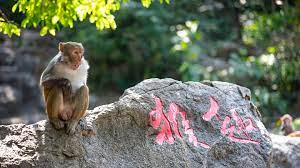
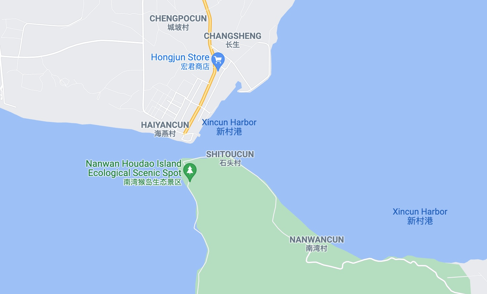
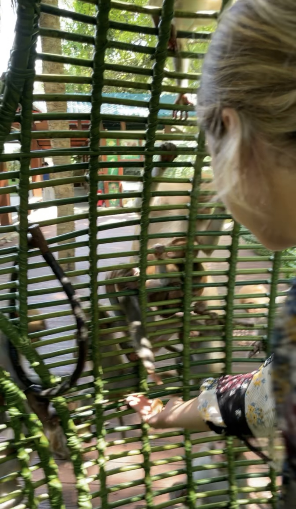
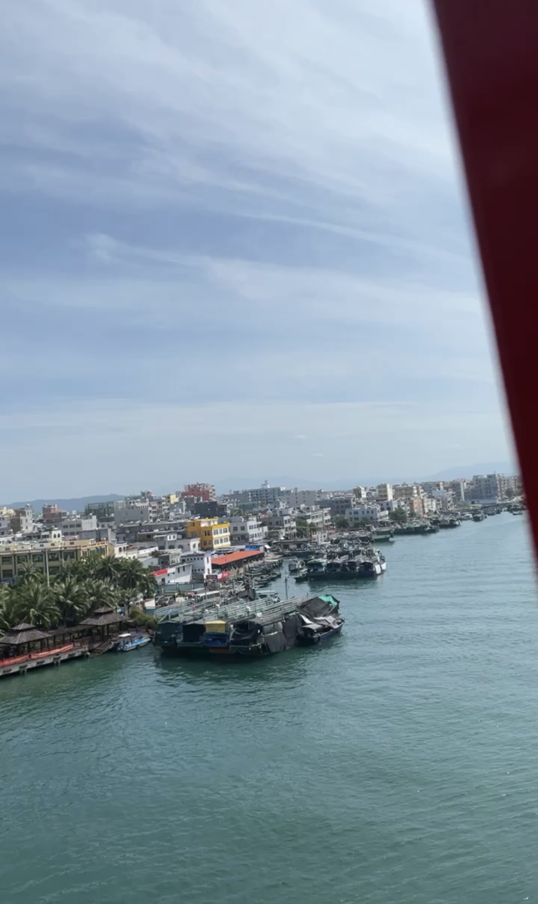
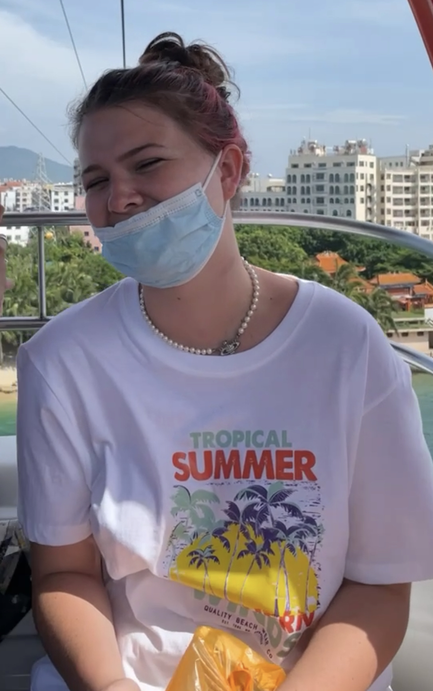

My Monkey Island Trip
Monkey Island, Sanya, Hainan
What is Monkey Island?
Click here for a short video on Monkey Island!
Nanwan Monkey Island is a state-protected nature reserve for macaque monkeys in Lingshui county on the south coast of Hainan, the southernmost province of China. While termed an island, the reserve is actually on the Nanwan peninsula bordering the Xincun harbour on the east and south. It is accessible by China's longest over-water cable car from Xincun, spanning 2,138 metres (7,014 ft).

How to get there?
Address: Lingshui, Hainan, China

Contact Phone number:
- 0898-83360902
- 0898-83362714
What can I do in Monkey Island?
- Feed the monkeys!

- Take a cable car to the island

- buy a fire fit

Public Opinion on Monkey Island
Public Rating: 4.3/5 - Very Good!
Latest Reviews:
- _We***38 says: 5/5 Outstanding - This is a place you must go to. It is so amazing. The monkeys are so cute. One took my Sprite from me but that’s okay. I would have shared anyway. They walk on the sidewalk next to you. There is a area where you can take pictures with them too. Adults like children can have fun here. If you love animals you should go here.
- ErinLi says: 5/5 Outstanding - We had a brilliant day here! To get to Nanwan monkey Island take the high-speed train from Sanya railway station to Lingshui. Turn left as you exit Lingshui railway station and you'll see the bus station. Take bus number 80 and get off at the last stop. Here you can buy your tickets and take either a cable car or a boat to the island!
- E23***22 says: 1/5 Terrible - This was a dumb idea. I naively envisioned a mountain park with monkeys knocking about. As soon as I got there I realised it was going to be depressing. Performing monkeys in chain, etc. The wild monkeys they do have are hanging around for tourist food and are dangerous. I was bitten by a large male. The cost of rabies shots alone makes this park a rip off. And I saw two other people get bitten by monkeys in the 1.5 hours I was there. A day of regrets :(
- 夏吹夏夜风 says: 5/5 Outstanding - Located on the Nanwan Peninsula of Lingshui County, Hainan Province, Nanwan Monkey Island has lush forests and beautiful scenery. It is the only tropical island-type macaque nature reserve in the world. It can see many lovely macaques and is close to each other. Your distance is not so far from the cage and outside, but the same space, suitable for the visitors who like small animals. There are more than 21 groups of macaques living on the island, nearly 2000 lively and lovely macaques (the second national protected animals), so people call them "monkey island", these domesticated macaques are mostly scattered, lively and witty and not afraid of tourists, very interesting. The best way to go is to take a cross-sea ropeway, the ropeway is 2 km long, across the South Bay, you can see the fishing row culture of the Yao family fishermen. After going to the island, some staff will order some precautions, such as not touching the bag with your hand, because the monkey may think there is food, and jump up and so on. Then you can visit freely, there are several places in the island where you can take pictures with monkeys, not expensive, there are monkey acrobatics, very interesting. In addition, the attractions such as "Warguard of Welcome Guilt", "Bathing Holy Pool", "Macacaque Kingdom detention center" are basically related to the monkeys of the size of the attractions. 1. Don't wear red clothes on the monkey island, otherwise the mother monkey may be jealous, tear clothes. 2. Don't look at the monkey. When the monkey is looking at you, it is to ask for food. Their hands are extended to indicate that there is no food. 3. Photos with the monkey must be taken under the command of the staff.